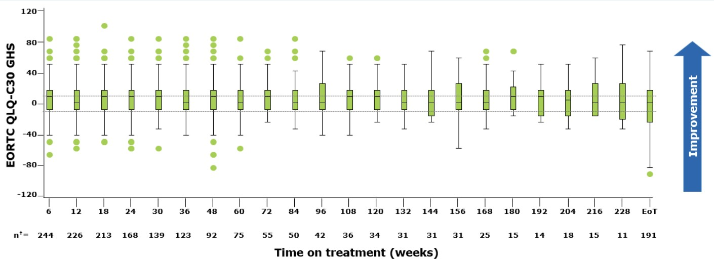
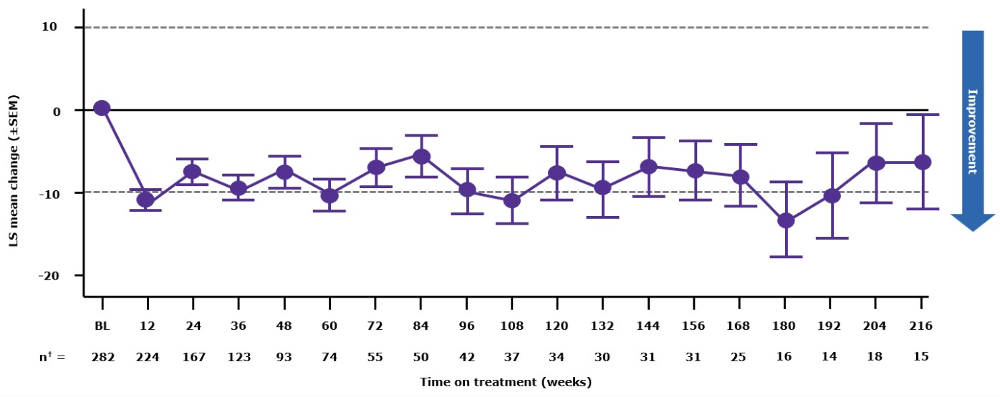
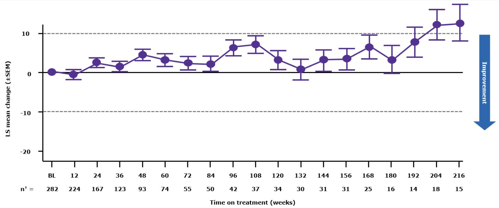
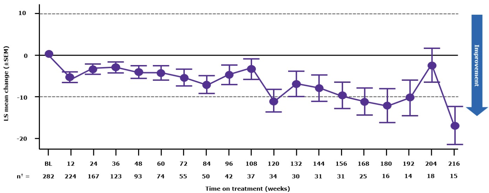

Consider: Over 228 weeks, how did HRQoL PRO scores change from baseline in patients with METex14 skipping NSCLC, as exemplified by EORTC QLQ-C30 (European Organisation for Research and Treatment of Cancer Quality of Life Questionnaire-Core 30) and EQ-5D-5L (EuroQol 5-Dimension, 5-Level) scores?
Scoresremained stable
There was no meaningful change in EORTC QLQ-C30 or EQ-5D-5L scores up to 228 weeks with tepotinib.
Overall, HRQoL PRO scores remained stable.
The mean change (±SD) from baseline for EORTC QLQ-C30 GHS was −7.1 (26.66) (n=174).

Number of patients who completed the questionnaire at each visit.
The mean change (±SD) from baseline in EORTC QLQ-LC13 symptom score for cough was −6.1 (28.16) (n=175).

Number of patients who completed the questionnaire at each visit.
The mean change (±SD) from baseline in EORTC QLQ-LC13 symptom score for dyspnea was 7.1 (21.05) (n=175).

Number of patients who completed the questionnaire at each visit.
The mean change (±SD) from baseline in EORTC QLQ-LC13 symptom score for chest pain was −2.3 (28.13) (n=174).

Number of patients who completed the questionnaire at each visit.
The mean change (±SD) from baseline in EQ-5D-5L EQ-VAS score was −10 (23.7) (n=172).
On a computer, the activity appears here directly.
All done — use the ◀ ▶ arrows at the bottom of the screen to continue when you’re ready.Finished — tap Return to course to carry on.
Source
VISION study — HRQoL / patient-reported outcomes
17. Felip E, Ferrara R, Veillon R, Le X, Smit EF, Mazieres J, et al. Safety and Patient-Reported Outcomes With Tepotinib in Patients With METex14 Skipping NSCLC: ≥3-Years Follow-Up of VISION. J Thorac Oncol. 2025;20(10 Suppl 1):S483–S484. (P3.12.40)